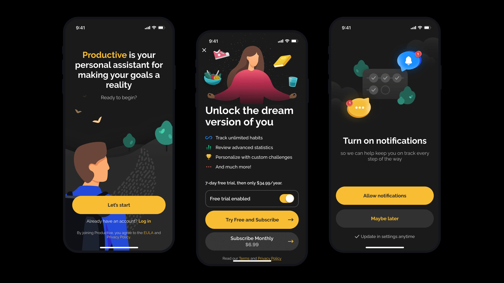
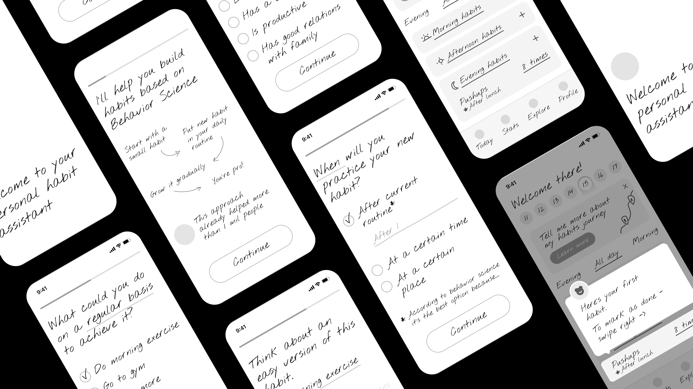
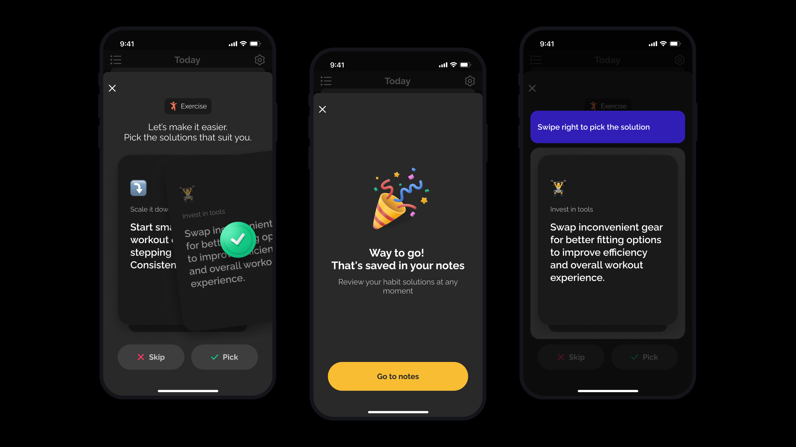

How a habit tracker began exploring a more supportive role: helping people understand what gets in the way of a routine, and what could help them return to it.

Productive across key mobile moments: getting started, choosing a plan, and setting up reminders.
Product context
Research, user feedback, and behavioral-science thinking pointed to a broader challenge: people could begin a habit with motivation, then find it difficult to sustain over time.
The obstacles varied. A goal could feel too ambitious, a helpful cue might be missing from someone’s everyday surroundings, or the chosen activity might not suit them. A person who wanted to exercise, for example, might find that yoga suited them better than the gym.
In parallel, I conducted end-to-end qualitative research into the first-time user experience and used the findings to improve the onboarding flow.
We began exploring a shift from a passive habit tracker toward a personal assistant: a product that could help people understand what was getting in their way and find a more workable approach.
Drawing on ideas from Atomic Habits, we tested an early intervention for people who had stopped completing a habit.
A short quiz asked questions about the habit and how well it fit into the person’s life.
The answers helped surface possible barriers, such as an oversized goal, a missing cue, or an activity that did not feel right.
The app matched answers with relevant tips. People could choose advice that felt useful and save it for later.
I designed the end-to-end product flow for the feature, from the quiz experience through selecting and saving advice.

Early wireframes exploring a more supportive, assistant-like direction for Productive.
The quiz was designed to lead somewhere useful: answers shaped a set of relevant suggestions, so the user could choose what to try and return to it later. The flow aimed to make a missed habit a moment for reflection and support.
I designed the end-to-end flow, connecting the questions with the selection and saving of relevant advice in one continuous experience.

The personalized-advice flow: explore possible solutions, choose one, and save it for later.
The quiz became part of a larger exploration: moving Productive from a simple tracker toward a personal habit assistant. We created prototypes and took the new direction into early testing.
I maintained and extended the product’s design system, adding components to support new features across iOS and Android.
Alongside the personalized-advice flow, I designed an ADHD-awareness quiz for a campaign with the World Health Organization and Productive’s iPhone widgets when the feature first launched. Apple later featured the widgets in a curated collection.
I designed subscription screens and limited-time offer experiences within the mobile product.
I created supporting marketing materials, including banners, landing pages, and emails.
I partnered with developers and UX writers, and worked with the product manager, marketer, and support specialist to shape and review the experience.